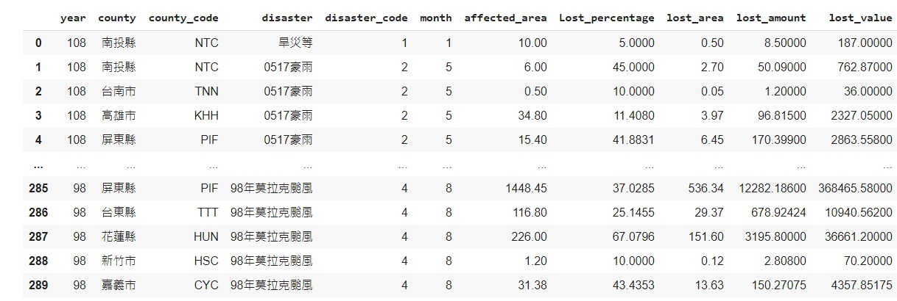
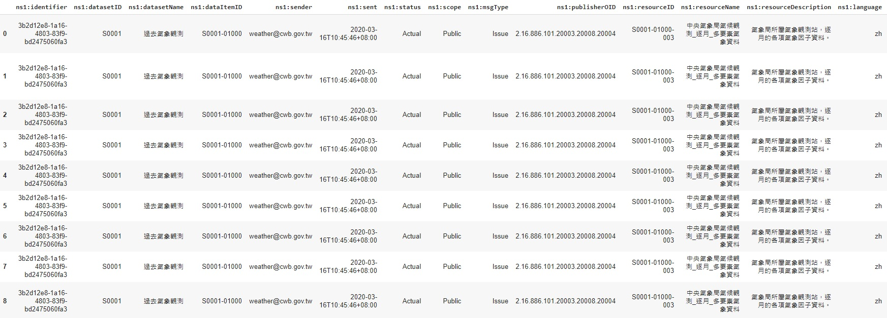
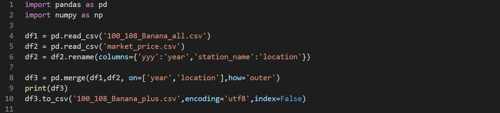

▋資料檢視
下載來自農委會、農糧署、氣象局等政府單位提供之Open Data，資料類型有種植資料、收穫資料、災害損失資料、氣候資料、各地每日市場價格資料、每月進出口資料等下載共約 89,708筆資料。
檢視 98 年-108 年每年台灣各縣市香蕉收穫產量資料。
檢視 98 年-108 年每年台灣各災害影響各縣市香蕉產量數據。
檢視 100 年-110 年,台灣各測站每日氣候數據。
▋資料清洗
檢視資料時發現，欄位需要重新進行編號跟調整，包含台灣縣市中六都改制前後的資料、將缺失值處理、重複值調整、非必要欄位的刪除等。
location 編號須另外編碼,利用 set、where 等指令,將代號統一以利後續與其他資料進行合併。
將原始資料刪除整列完全相同的重複資料,取得不重複資料。
利用 case when 將日期修改至需要的格式(以新增一欄位的方式)。
將資料 pivot 成不同欄位,減少資料大小(重複的 country, year, id 等)
刪除不用的欄與列,挑選出需要的氣象資料欄位(ex. 欄:無人觀測站/有人觀測站,列:外島氣象資料)
▋資料合併
完成原始檔案檢視、資料清洗後，因為後續機器學習需要的特徵欄位都儲存在不同的表裡，為便於操作，我們按照某些欄位對這些表的資料進行合併組合成一張新的資料表。

利用 sum、avg、max、min 等指令,將原始檔案中根據各欄位的內容屬性,將月為單位的資料,合併為整年度資料。
將香蕉生產資料與另一份各縣市市場價格資料合併為完整資料